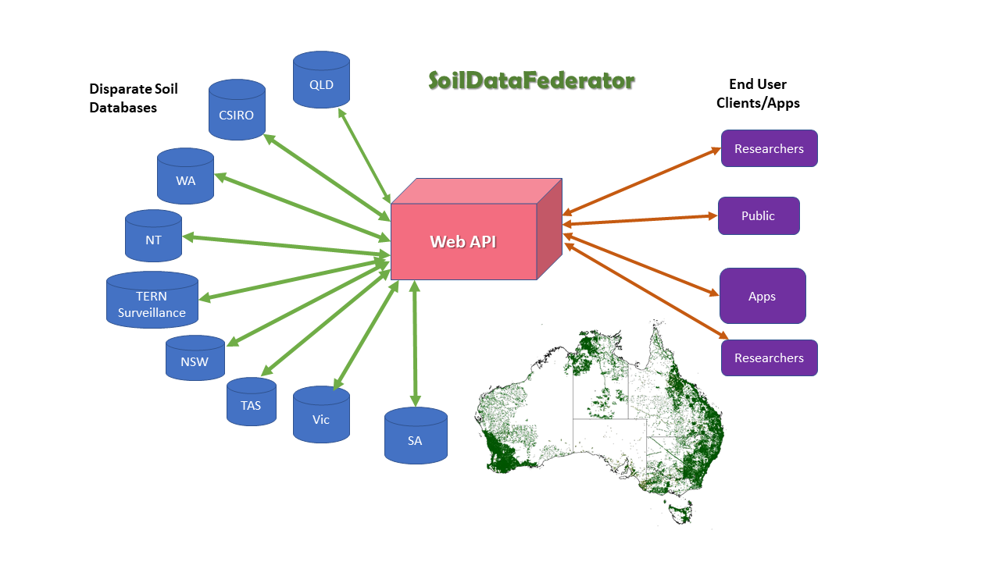
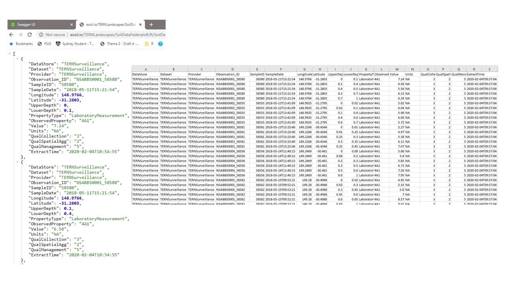
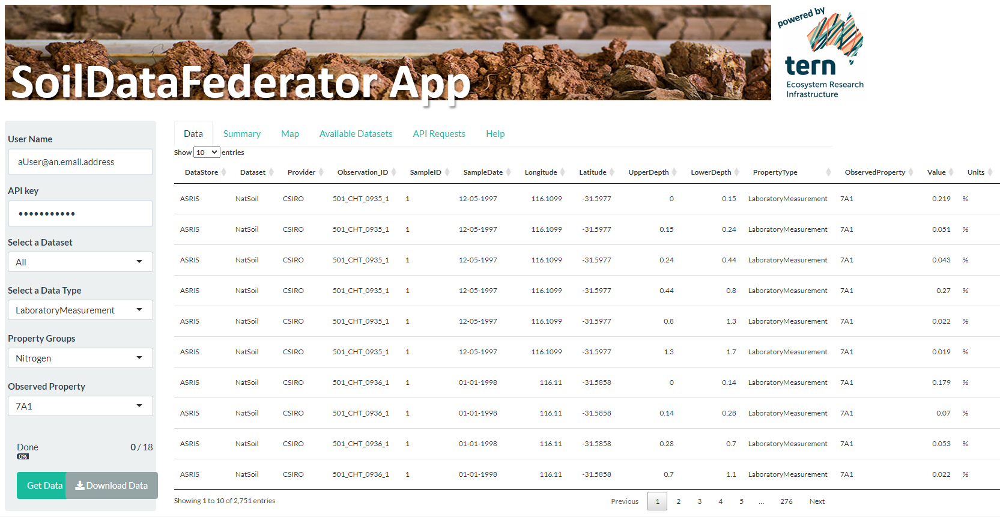

SoilDataFederator
The SoilDataFederator is a web API that brings together soil site data from a range of disparate data sources. It removes the complexity and hassles associated with trying to access and use soil data from different sources. It allows the user to query soil data stores across Australia in a consistent manner and the data returned is a consistent format. Users do not need to know the details of each of the individual data stores structures and querying mechanisms. The data in the system is historical soil survey data and is composed of both soil morphological description data and laboratory analysis data. The SoilDataFederator will return all available data for a specified soil property.
Australia is fortunate to have a large number of soil profile data observations and measurements publicly available for use in an ever-increasing range of applications. This data is collected and managed by a broad range of custodians across the country. These custodians collect the data for their own specific business purposes and manage it in a disparate range of data management environments. Until now individuals wanting to bring this data together in a unified way had to source data from each of the individual custodians, on a case by case basis, and transform it to a useful form for their specific application. A challenging task rarely undertaken with any degree of excitement.
At a conceptual level, there is a broad spectrum of approaches through which data unification can be achieved, from the creation of a centralised behemoth database through to the case by case collation of datasets. The “SoilDataFederator” is a federation approach to data unification, where data is managed by custodians but is federated on the fly to into a consistent form. This approach has the advanatge that the data custodians remain in control of their datasets but users have access to the most up to date data.

The SoilDataFederator is a web application programming Interface (API) implemented in the R programming language. Being implemented as an API, you can use your programming langauge of choice to access soil data via the API. Details about using the API are available and code examples in the R language can be downloaded. There is a SwaggerUI available to let you explore the syntax of the API. The API accesses datasets that are already publicly available. The API is used to query data over the internet via a standardised set of URLs with standardised parameters. Data can be returned in a range of formats but always in a standard form optimised for delivering data on a per attribute basis. The SoilDataFederator consists of a catalogue of available datasets and a series of associated “backend” modules which query the individual data systems and transform the data on the fly to the standard form. The code base is publicly available with the idea that the soil community will develop it further in the future .

While the API is meant to be the primary means of accessing federated soils data we also have a WebApp that allows users without coding skills to manually download data from the SoilDataFederator API. The SoilDataFederator Web App can be found here

SoilDataFederator Partners